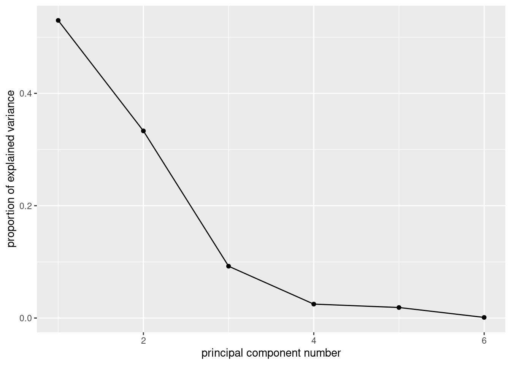

Chapter 39 Principal Components
Packages for this chapter:
39.1 The weather, somewhere
The data in link is of the weather in a certain location: daily weather records for 2014. The variables are:
day of the year (1 through 365)
day of the month
number of the month
season
low temperature (for the day)
high temperature
average temperature
time of the low temperature
time of the high temperature
rainfall (mm)
average wind speed
wind gust (highest wind speed)
time of the wind gust
wind direction
Read in the data, and create a data frame containing only the temperature variables, the rainfall and the wind speed variables (the ones that are actual numbers, not times or text). Display the first few lines of your data frame.
Find five-number summaries for each column by running
quantileon all the columns of the data frame (at once, if you can).Run a principal components analysis (on the correlation matrix).
Obtain a
summaryof your principal components analysis. How many components do you think are worth investigating?Make a scree plot. Does this support your conclusion from the previous part?
Obtain the component loadings. How do the first three components depend on the original variables? (That is, what kind of values for the original variables would make the component scores large or small?)
Obtain the principal component scores, for as many components as you think are reasonable, and display the first 20 of them for each component alongside the other variables in your data frame.
Find a day that scores low on component 1, and explain briefly why it came out that way (by looking at the measured variables).
Find a day that scores high on component 2, and explain briefly why it came out that way.
Find a day that scores high on component 3, and explain briefly why it came out high.
Make a biplot of these data, labelling the days by the day count (from 1 to 365). You may have to get the day count from the original data frame that you read in from the file. You can shrink the day numbers to make them overwrite each other (a bit) less.
Looking at your biplot, what do you think was remarkable about the weather on day 37? Day 211? Confirm your guesses by looking at the appropriate rows of your data frame (and comparing with your
summaryfrom earlier).
My solutions follow:
39.2 The weather, somewhere
The data in link is of the weather in a certain location: daily weather records for 2014. The variables are:
day of the year (1 through 365)
day of the month
number of the month
season
low temperature (for the day)
high temperature
average temperature
time of the low temperature
time of the high temperature
rainfall (mm)
average wind speed
wind gust (highest wind speed)
time of the wind gust
wind direction
- Read in the data, and create a data frame containing only the temperature variables, the rainfall and the wind speed variables (the ones that are actual numbers, not times or text). Display the first few lines of your data frame.
Solution
Read into a temporary data frame, and then process:
my_url <- "http://ritsokiguess.site/datafiles/weather_2014.csv"
weather.0 <- read_csv(my_url)
weather.0## # A tibble: 365 x 14
## day.count day month season l.temp h.temp ave.temp l.temp.time h.temp.time rain ave.wind gust.wind gust.wind.time dir.wind
## <dbl> <dbl> <dbl> <chr> <dbl> <dbl> <dbl> <time> <time> <dbl> <dbl> <dbl> <time> <chr>
## 1 1 1 1 Winter 12.7 14 13.4 01:25 23:50 32 11.4 53.1 15:45 S
## 2 2 2 1 Winter 11.3 14.7 13.5 07:30 11:15 64.8 5.6 41.8 22:25 S
## 3 3 3 1 Winter 12.6 14.7 13.6 21:00 14:00 12.7 4.3 38.6 00:00 SSW
## 4 4 4 1 Winter 7.7 13.9 11.3 10:35 01:50 20.1 10.3 66 09:05 SW
## 5 5 5 1 Winter 8.8 14.6 13 01:40 12:55 9.4 11.6 51.5 13:50 SSE
## 6 6 6 1 Winter 11.8 14.4 13.1 19:35 00:05 38.9 9.9 57.9 08:10 SSE
## 7 7 7 1 Winter 11.4 14.8 13.5 07:25 14:30 2 6.6 38.6 11:45 SE
## 8 8 8 1 Winter 12.4 15.6 14.1 23:50 13:25 1.5 5.9 33.8 14:00 SE
## 9 9 9 1 Winter 9.2 18.4 12.9 07:10 14:05 0 0.2 16.1 14:25 N
## 10 10 10 1 Winter 8.3 14.8 11 07:55 12:20 0 1.4 24.1 14:20 NNW
## # … with 355 more rowsThere are lots of columns, of which we only want a few:
## # A tibble: 365 x 6
## l.temp h.temp ave.temp rain ave.wind gust.wind
## <dbl> <dbl> <dbl> <dbl> <dbl> <dbl>
## 1 12.7 14 13.4 32 11.4 53.1
## 2 11.3 14.7 13.5 64.8 5.6 41.8
## 3 12.6 14.7 13.6 12.7 4.3 38.6
## 4 7.7 13.9 11.3 20.1 10.3 66
## 5 8.8 14.6 13 9.4 11.6 51.5
## 6 11.8 14.4 13.1 38.9 9.9 57.9
## 7 11.4 14.8 13.5 2 6.6 38.6
## 8 12.4 15.6 14.1 1.5 5.9 33.8
## 9 9.2 18.4 12.9 0 0.2 16.1
## 10 8.3 14.8 11 0 1.4 24.1
## # … with 355 more rows\(\blacksquare\)
- Find five-number summaries for each column by running
quantileon all the columns of the data frame (at once, if you can).
Solution
I think this is the easiest way:
## # A tibble: 5 x 6
## l.temp h.temp ave.temp rain ave.wind gust.wind
## <dbl> <dbl> <dbl> <dbl> <dbl> <dbl>
## 1 3.1 9.8 7.3 0 0 3.2
## 2 9.1 14.4 12 0 2.3 22.5
## 3 12.9 19.1 15.8 0.3 3.5 29
## 4 16.3 23.3 19.3 5.3 5.2 38.6
## 5 22.6 31.5 26.6 74.9 16.6 86.9This loses the actual percents of the percentiles of the five-number summary (because they are “names” of the numerical result, and the tidyverse doesn’t like names.) I think you can see which percentile is which, though.
Another way to do it is to make a column of column names, using
pivot_longer, and then use nest and list-columns to find
the quantiles for each variable:
weather %>%
pivot_longer(everything(), names_to="xname", values_to="x") %>%
nest_by(xname) %>%
mutate(q = list(enframe(quantile(data$x)))) %>%
unnest(q) %>%
pivot_wider(names_from=name, values_from=value) %>%
select(-data)## # A tibble: 6 x 6
## # Groups: xname [6]
## xname `0%` `25%` `50%` `75%` `100%`
## <chr> <dbl> <dbl> <dbl> <dbl> <dbl>
## 1 ave.temp 7.3 12 15.8 19.3 26.6
## 2 ave.wind 0 2.3 3.5 5.2 16.6
## 3 gust.wind 3.2 22.5 29 38.6 86.9
## 4 h.temp 9.8 14.4 19.1 23.3 31.5
## 5 l.temp 3.1 9.1 12.9 16.3 22.6
## 6 rain 0 0 0.3 5.3 74.9That was a lot of work, but it depends on how you see it when you’re coding it. You should investigate this one line at a time, but the steps are:
create a “long” data frame with one column of variable names and a second with the values for that variable
make mini-data-frames
datacontaining everything butxname: that is, one columnxwith the values for that variable.for each mini-data-frame, work out the quantiles of its
x. Theenframesaves the labels for what percentiles they are.Unnest this to make a long data frame with one row for each quantile for each variable.
put the variable names in rows and the percentiles in columns.
\(\blacksquare\)
- Run a principal components analysis (on the correlation matrix).
Solution
\(\blacksquare\)
- Obtain a
summaryof your principal components analysis. How many components do you think are worth investigating?
Solution
## Importance of components:
## Comp.1 Comp.2 Comp.3 Comp.4 Comp.5 Comp.6
## Standard deviation 1.7830875 1.4138296 0.74407069 0.38584917 0.33552998 0.081140732
## Proportion of Variance 0.5299001 0.3331524 0.09227353 0.02481326 0.01876339 0.001097303
## Cumulative Proportion 0.5299001 0.8630525 0.95532604 0.98013930 0.99890270 1.000000000The issue is to see where the standard deviations are getting small (after the second component, or perhaps the third one) and to see where the cumulative proportion of variance explained is acceptably high (again, after the second one, 86%, or the third, 95%).
\(\blacksquare\)
- Make a scree plot. Does this support your conclusion from the previous part?
Solution
ggscreeplot from ggbiplot:

I see elbows at 3 and at 4. Remember you want to be on the mountain for these, not on the scree, so this suggests 2 or 3 components, which is exactly what we got from looking at the standard deviations and cumulative variance explained.
The eigenvalue-greater-than-1 thing
(that is, the “standard deviation” in the summary being greater than 1)
says 2 components, rather than 3.
\(\blacksquare\)
- Obtain the component loadings. How do the first three components depend on the original variables? (That is, what kind of values for the original variables would make the component scores large or small?)
Solution
##
## Loadings:
## Comp.1 Comp.2 Comp.3 Comp.4 Comp.5 Comp.6
## l.temp 0.465 0.348 0.542 0.470 0.379
## h.temp 0.510 0.231 -0.576 -0.381 0.458
## ave.temp 0.502 0.311 -0.804
## rain -0.296 0.397 0.853 -0.163
## ave.wind -0.253 0.560 -0.463 0.357 -0.529
## gust.wind -0.347 0.507 -0.230 -0.492 0.572
##
## Comp.1 Comp.2 Comp.3 Comp.4 Comp.5 Comp.6
## SS loadings 1.000 1.000 1.000 1.000 1.000 1.000
## Proportion Var 0.167 0.167 0.167 0.167 0.167 0.167
## Cumulative Var 0.167 0.333 0.500 0.667 0.833 1.0001: This component loads mainly (and positively) on the temperature variables, so when temperature is high, component 1 is high. You could also say that it loads negatively on the other variables, in which case component 1 is high if the temperature variables are low and the rain and wind variables are high.
2: This one loads most heavily, positively, on wind: when wind is high, component 2 is high. Again, you can make the judgement call that the other variables also feature in component 2, so that when everything is large, component 2 is large and small with small.
3: This one is a bit clearer. The blank loadings are close to 0, and can be ignored. The main thing in component 3 is rain: when rainfall is large, component 3 is large. Or, if you like, it is large (positive) when rainfall is large and wind is small.
The interpretation here is kind of muffled, because each component has
bits of everything. One of the advantages of factor analysis that we
see in class later is that
you can do a “rotation” so that each variable (to a greater extent)
is either in a factor or out of it. Such a varimax rotation
is the default for factanal, which I presume I now have to
show you (so this is looking ahead):
##
## Loadings:
## Factor1 Factor2 Factor3
## l.temp 0.964 -0.230
## h.temp 0.939 -0.203 0.267
## ave.temp 0.992 -0.101
## rain -0.147 0.604
## ave.wind 0.864
## gust.wind -0.144 0.984
##
## Factor1 Factor2 Factor3
## SS loadings 2.839 2.131 0.140
## Proportion Var 0.473 0.355 0.023
## Cumulative Var 0.473 0.828 0.852These are a lot less ambiguous: factor 1 is temperature, factor 2 is rain and wind, and factor 3 is large (positive) if the high temperature is high or the low temperature is low: that is, if the high temperature was especially high relative to the low temperature (or, said differently, if the temperature range was high).
These factors are rather pleasantly interpretable.
ggbiplot mysteriously doesn’t handle factor analyses, so we
have to go back to the base-graphics version, which goes a bit like this:

Now you see that the factors are aligned with the axes, and it’s very clear what the factors “represent”. (You don’t see much else, in all honesty, but you see at least this much.)
\(\blacksquare\)
- Obtain the principal component scores, for as many components as you think are reasonable, and display the first 20 of them for each component alongside the other variables in your data frame.
Solution
Something like this. I begin by turning the component scores (which are a matrix) into a data frame, and selecting the ones I want (the first three):
as_tibble(weather.1$scores) %>%
select(1:3) %>%
bind_cols(weather) %>%
mutate(day = row_number()) -> d
d ## # A tibble: 365 x 10
## Comp.1 Comp.2 Comp.3 l.temp h.temp ave.temp rain ave.wind gust.wind day
## <dbl> <dbl> <dbl> <dbl> <dbl> <dbl> <dbl> <dbl> <dbl> <int>
## 1 -2.84 3.13 -0.00402 12.7 14 13.4 32 11.4 53.1 1
## 2 -2.79 2.31 3.64 11.3 14.7 13.5 64.8 5.6 41.8 2
## 3 -1.11 0.255 0.263 12.6 14.7 13.6 12.7 4.3 38.6 3
## 4 -3.62 2.47 -0.992 7.7 13.9 11.3 20.1 10.3 66 4
## 5 -2.67 2.03 -1.68 8.8 14.6 13 9.4 11.6 51.5 5
## 6 -3.09 3.14 0.664 11.8 14.4 13.1 38.9 9.9 57.9 6
## 7 -1.22 0.328 -0.958 11.4 14.8 13.5 2 6.6 38.6 7
## 8 -0.734 0.102 -0.743 12.4 15.6 14.1 1.5 5.9 33.8 8
## 9 0.210 -2.26 0.534 9.2 18.4 12.9 0 0.2 16.1 9
## 10 -0.825 -2.00 0.109 8.3 14.8 11 0 1.4 24.1 10
## # … with 355 more rowsI just did the first three scores. I made a column day so that I can see which day of the year I am looking at (later).
\(\blacksquare\)
- Find a day that scores low on component 1, and explain briefly why it came out that way (by looking at the measured variables).
Solution
We can do this one and the ones following by running
arrange appropriately:
## # A tibble: 365 x 10
## Comp.1 Comp.2 Comp.3 l.temp h.temp ave.temp rain ave.wind gust.wind day
## <dbl> <dbl> <dbl> <dbl> <dbl> <dbl> <dbl> <dbl> <dbl> <int>
## 1 -5.29 4.64 -0.294 7 14.4 9.9 43.2 13 86.9 40
## 2 -4.89 3.50 1.64 6.5 12.9 10.3 57.4 10.3 66 35
## 3 -4.64 5.33 -0.653 9.3 15.3 12.5 43.4 16.6 74 37
## 4 -4.57 2.19 -1.49 5.5 10.7 8.8 17 11.1 69.2 41
## 5 -4.48 2.11 1.90 6.8 11.5 8.9 50.5 6.8 61.2 34
## 6 -4.36 4.45 1.06 9.1 15.2 12.2 55.1 12.8 66 45
## 7 -3.82 2.24 0.532 7.8 12.9 10.7 34.8 8.1 62.8 39
## 8 -3.62 2.47 -0.992 7.7 13.9 11.3 20.1 10.3 66 4
## 9 -3.44 0.576 -2.10 5.7 11.4 8.4 0 9.8 51.5 363
## 10 -3.36 2.19 -0.705 9.1 13 11.3 20.3 9.3 62.8 38
## # … with 355 more rowsDay 40 has the lowest component 1 score. This is one of the cooler days. Also, there is a largish amount of rain and wind. So low temperature, high rain and wind. Some of the other days on my list were cooler than day 4, but they had less rain and less wind.
\(\blacksquare\)
- Find a day that scores high on component 2, and explain briefly why it came out that way.
Solution
## # A tibble: 365 x 10
## Comp.1 Comp.2 Comp.3 l.temp h.temp ave.temp rain ave.wind gust.wind day
## <dbl> <dbl> <dbl> <dbl> <dbl> <dbl> <dbl> <dbl> <dbl> <int>
## 1 -4.64 5.33 -0.653 9.3 15.3 12.5 43.4 16.6 74 37
## 2 -5.29 4.64 -0.294 7 14.4 9.9 43.2 13 86.9 40
## 3 -4.36 4.45 1.06 9.1 15.2 12.2 55.1 12.8 66 45
## 4 -1.61 4.33 3.43 17.7 19.1 18.3 68.3 8.3 46.7 261
## 5 -1.02 3.63 1.36 16.8 20.4 19 39.1 6.9 59.5 289
## 6 2.42 3.51 -1.39 20.9 31.2 25.7 0 8.8 46.7 166
## 7 -4.89 3.50 1.64 6.5 12.9 10.3 57.4 10.3 66 35
## 8 0.0301 3.49 -0.0846 18.5 22.3 20.3 22.9 10.3 43.5 260
## 9 -0.745 3.45 1.99 15.9 21.4 19.9 46.2 7.7 45.1 281
## 10 -0.105 3.20 -0.493 17.9 21.8 19.5 16.5 9.3 49.9 290
## # … with 355 more rowsDay 37. These are days when the wind speed (average or gust) is on the high side.
\(\blacksquare\)
- Find a day that scores high on component 3, and explain briefly why it came out high.
Solution
## # A tibble: 365 x 10
## Comp.1 Comp.2 Comp.3 l.temp h.temp ave.temp rain ave.wind gust.wind day
## <dbl> <dbl> <dbl> <dbl> <dbl> <dbl> <dbl> <dbl> <dbl> <int>
## 1 -2.32 2.23 4.92 11.8 17.2 14.6 74.9 2.8 41.8 307
## 2 -2.79 2.31 3.64 11.3 14.7 13.5 64.8 5.6 41.8 2
## 3 0.0819 2.90 3.59 16.1 26.6 20.3 54.4 2 49.9 264
## 4 -1.61 4.33 3.43 17.7 19.1 18.3 68.3 8.3 46.7 261
## 5 -0.759 2.48 3.42 15.7 19.5 18.6 55.6 4.5 37 288
## 6 -2.21 3.12 2.15 12.8 17.7 15.8 50.5 7.2 53.1 317
## 7 -0.745 3.45 1.99 15.9 21.4 19.9 46.2 7.7 45.1 281
## 8 -4.48 2.11 1.90 6.8 11.5 8.9 50.5 6.8 61.2 34
## 9 -1.77 0.693 1.72 10.7 15.6 13 32.8 4 38.6 312
## 10 -4.89 3.50 1.64 6.5 12.9 10.3 57.4 10.3 66 35
## # … with 355 more rowsDay 307. Component 3 was mainly rain, so it is not surprising that the rainfall is the highest on this day.
\(\blacksquare\)
- Make a biplot of these data, labelling the days by the day count (from 1 to 365). You may have to get the day count from the original data frame that you read in from the file. You can shrink the day numbers to make them overwrite each other (a bit) less.
Solution
ggbiplot. I did some digging in the help file to figure
out how to label the points by a variable and how to control the
size of the labels, and I also went digging in the data frame
that I read in from the file to get the count of the day in the
year, which was called day.count:

I think the label text is small enough, though you could make it smaller. I’ll be asking you to look at some extreme points in a moment, so those are the only ones you’ll need to be able to disentangle.
The variables divide into two groups: the temperature ones, that point to about 2 o’clock, and the wind and rain ones, that point to about 11 o’clock. These are not straight up or down or across, so they all feature in both components: component 1 is mostly temperature, but has a bit of wind/rain in it, while component 2 is mostly wind/rain with a bit of temperature in it. You might be wondering whether things couldn’t be rotated so that, say, the temperature variables go across and the rain/wind ones go down, which means you’d have a temperature component and a rain/wind component. This is what factor analysis does, and I think I did that earlier (and this is what we found).
\(\blacksquare\)
- Looking at your biplot, what do you think was remarkable
about the weather on day 37? Day 211? Confirm your guesses by
looking at the appropriate rows of your data frame (and comparing
with your
summaryfrom earlier).
Solution
Day 37 is at the top left of the plot, at the pointy end of the arrows for rain, wind gust and average wind. This suggests a rainy, windy day:
## # A tibble: 1 x 6
## l.temp h.temp ave.temp rain ave.wind gust.wind
## <dbl> <dbl> <dbl> <dbl> <dbl> <dbl>
## 1 9.3 15.3 12.5 43.4 16.6 74Those are high numbers for both rain and wind (the highest for average wind and above the third quartile otherwise), but the temperatures are unremarkable.
Day 211 is towards the pointy end of the arrows for temperature, so this is a hot day:
## # A tibble: 1 x 6
## l.temp h.temp ave.temp rain ave.wind gust.wind
## <dbl> <dbl> <dbl> <dbl> <dbl> <dbl>
## 1 22.6 31.5 26.6 0 4.5 33.8This is actually the hottest day of the entire year: day 211 is highest on all three temperatures, while the wind speeds are right around average (and no rain is not completely surprising).
I can do a couple more. Points away from the pointy end of the arrows are low on the variables in question, for example day 265:
## # A tibble: 1 x 6
## l.temp h.temp ave.temp rain ave.wind gust.wind
## <dbl> <dbl> <dbl> <dbl> <dbl> <dbl>
## 1 16.6 20.3 18.1 6.3 0 3.2This is not really low rain, but it is definitely low wind. What about day 47?
## # A tibble: 1 x 6
## l.temp h.temp ave.temp rain ave.wind gust.wind
## <dbl> <dbl> <dbl> <dbl> <dbl> <dbl>
## 1 3.1 11.8 7.3 0.8 2 24.1This is predominantly low on temperature. In fact, it is kind of low on wind and rain too.36 This makes sense, because not only is it at the “wrong” end of the temperature arrows, it is kind of at the wrong end of the wind/rain arrows as well.
Having done these by percentile ranks in one of the other questions, let’s see if we can do that here as well:
## # A tibble: 4 x 6
## l.temp h.temp ave.temp rain ave.wind gust.wind
## <dbl> <dbl> <dbl> <dbl> <dbl> <dbl>
## 1 0.264 0.316 0.299 0.973 1 0.997
## 2 1 0.997 1 0 0.654 0.626
## 3 0.783 0.560 0.635 0.761 0 0
## 4 0 0.0275 0 0.582 0.162 0.275The idea here is that we want to replace all the data values by the percent-rank version of themselves, rather than summarizing them as we have done before. That’s what using an across inside a mutate will do.37
These are:
Day 37: highly rainy and windy (and below average, but not remarkably so, on temperature).
Day 211: the highest or near-highest temperature, no rain but unremarkable for wind.
Day 265: Lowest for wind (and above Q3 for low temperature and rain).
Day 47: Lowest or near-lowest temperature.
The advantage to doing it this way is that you don’t need a separate five-number summary for each variable; the percentile ranks give you a comparison with quartiles (or any other percentile of interest to you). In case you are wondering where this is: I was doing a presentation using these data to some Environmental Science grad students, and I had them guess where it was. The temperatures for the whole year are warm-temperate, with a smallish range, and sometimes a lot of rain. This suggests a maritime climate. I gave the additional clues of “western Europe” and “this place’s soccer team plays in blue and white striped shirts”. The temperatures have about the right range low-to-high for Britain, but are too warm. Which suggests going south: perhaps Brittany in France, but actually the west coast of the Iberian peninsula: Porto, in northern Portugal, with the weather blowing in off the Atlantic.
\(\blacksquare\)